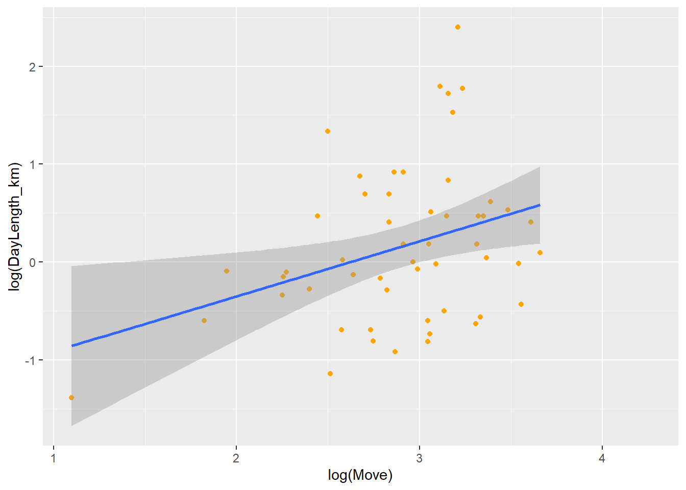
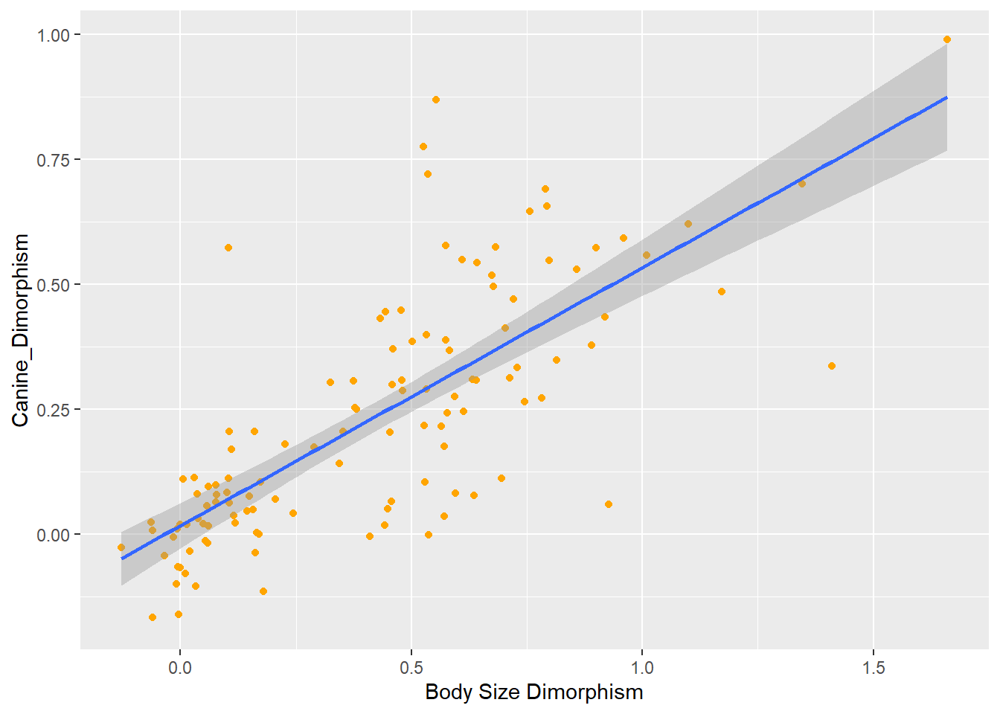
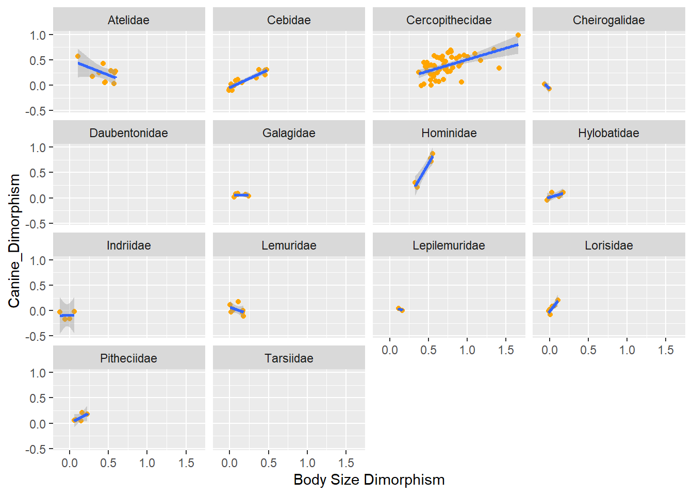
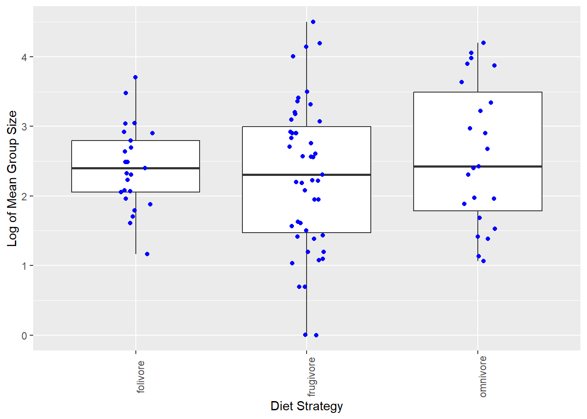

Warning: package 'tidyverse' was built under R version 4.3.3
Warning: package 'ggplot2' was built under R version 4.3.1
Warning: package 'lubridate' was built under R version 4.3.3
── Attaching core tidyverse packages ──────────────────────── tidyverse 2.0.0 ──
✔ dplyr 1.1.2 ✔ readr 2.1.4
✔ forcats 1.0.0 ✔ stringr 1.5.0
✔ ggplot2 3.4.4 ✔ tibble 3.2.1
✔ lubridate 1.9.4 ✔ tidyr 1.3.0
✔ purrr 1.0.1
── Conflicts ────────────────────────────────────────── tidyverse_conflicts() ──
✖ dplyr::filter() masks stats::filter()
✖ dplyr::lag() masks stats::lag()
ℹ Use the conflicted package (<http://conflicted.r-lib.org/>) to force all conflicts to become errors
f <-"https://raw.githubusercontent.com/difiore/ada-datasets/main/data-wrangling.csv"d <-read_csv(f, col_names =TRUE )
Rows: 213 Columns: 23
── Column specification ────────────────────────────────────────────────────────
Delimiter: ","
chr (6): Scientific_Name, Family, Genus, Species, Leaves, Fauna
dbl (17): Brain_Size_Species_Mean, Body_mass_male_mean, Body_mass_female_mea...
ℹ Use `spec()` to retrieve the full column specification for this data.
ℹ Specify the column types or set `show_col_types = FALSE` to quiet this message.
# 1. Create BSD BSD <- d$Body_mass_male_mean / d$Body_mass_female_mean# 2. Create Sex Ratio sex_ratio <- d$AdultFemale / d$AdultMales# 3. Create Defensibility Index DI <- d$DayLength_km / (sqrt(d$HomeRange_km2 / pi))
4
# Overalllibrary(ggplot2)library(dbplyr)
Warning: package 'dbplyr' was built under R version 4.3.3
Attaching package: 'dbplyr'
The following objects are masked from 'package:dplyr':
ident, sql
p <-ggplot(data = d, aes(x =log(Move), y =log(DayLength_km),color ="orange")) p <- p +xlab("log(Move)") +ylab("log(DayLength_km)")p <- p +geom_point(na.rm =TRUE)p <- p +theme(legend.position ="bottom", legend.title =element_blank())p <- p +geom_smooth(method ="lm", fullrange =FALSE, na.rm =TRUE)p
`geom_smooth()` using formula = 'y ~ x'

# By familyp <- p +facet_wrap(~Family) p +theme(legend.position ="none")
`geom_smooth()` using formula = 'y ~ x'
Warning in qt((1 - level)/2, df): NaNs produced
Warning in max(ids, na.rm = TRUE): no non-missing arguments to max; returning
-Inf
Do species that spend more time moving travel farther overall?
Looking at the overall trend across all families,species that live in larger groups travel farther.
How about within any particular primate family?
There are positive correlation in & species. Hylobatidae and Atilidae have positive correlation.
Should you transform either of these variables?
Yes, transformated values make clear results for the population distrubition
5
#Overalllibrary(ggplot2)p <-ggplot(data = d, aes(x =log(MeanGroupSize),y =log(DayLength_km), color ="blue"))p <- p +xlab("MeanGroupSIze)") +ylab("DayLength_km)")p <- p +geom_point(na.rm =TRUE)p <- p +theme(legend.position ="bottom", legend.title =element_blank())p <- p +geom_smooth(method ="lm", fullrange =FALSE, na.rm =TRUE)p
`geom_smooth()` using formula = 'y ~ x'
#by familyp <- p +facet_wrap(~Family) p +theme(legend.position ="none")
`geom_smooth()` using formula = 'y ~ x'
Warning in qt((1 - level)/2, df): NaNs produced
Warning in max(ids, na.rm = TRUE): no non-missing arguments to max; returning
-Inf
Do species in larger groups travel farther overall? Looking at the overall trend across all families,species that live in larger groups travel farther.
How about within specific primate families?
In Cercopithecidae, there’s a noticeable increase in day range length with group size.
Should we transform either variable?
Yes, transformated values make clear results for the population distrubition
6
##Overalllibrary(ggplot2)p <-ggplot(data = d, aes(x =log(Canine_Dimorphism),y =log(BSD), color ="blue"))p <- p +xlab("Body Size Dimorphism") +ylab("Canine_Dimorphism")p <- p +geom_point(na.rm =TRUE)p <- p +theme(legend.position ="bottom", legend.title =element_blank())p <- p +geom_smooth(method ="lm", fullrange =FALSE, na.rm =TRUE)p
`geom_smooth()` using formula = 'y ~ x'

#by familyp <- p +facet_wrap(~Family) p +theme(legend.position ="none")
`geom_smooth()` using formula = 'y ~ x'
Warning in qt((1 - level)/2, df): NaNs produced
Warning in max(ids, na.rm = TRUE): no non-missing arguments to max; returning
-Inf

Do taxa with greater size dimorphism also show greater canine dimorphism?
Yes. Taxa with greater size dimorphism shows greater canine dimorphism.
# Boxplotp <-ggplot(d_clean, aes(x = diet_strategy, y =log(MeanGroupSize))) +geom_boxplot() +geom_jitter(color ="blue", width =0.1) +labs(x ="Diet Strategy", y ="Log of Mean Group Size") +theme(axis.text.x =element_text(angle =90))p

Do frugivores live in larger groups than folivores?
No. Frugivores live in smaller groups than foliveres.